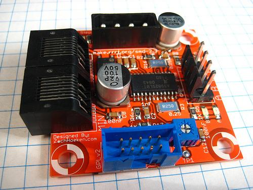

Stepper Motor Driver v2.3

This board allows you to control one stepper motor, as well as receive input from two limit switches. It is based around the Allegro A3982 Stepper Motor Driver with Translator. The A3982 is capable of driving up to 2A per coil. This board was designed to improve upon and replace the v1.x series of stepper drivers which are based upon the venerable L297/L298 stepper drivers. The A3982 offers a number of improvements:
* Only one chip to solder, as opposed to the two chip L297/L298 combo * Superior DMOS technology (no heatsink required!) * Built-in diodes and synchronous rectification (no large diode array!) * Much cheaper and smaller than the L297/L298 (about $10 cheaper, total!)
The downside is that the board is mostly SMT, although we made a conscious design decision to stick with some of the largest and easiest to solder SMT components on the market. We used 1206 sized resistors and the A3982 itself is in a SOIC package. The board is very easy to put together, even for a beginner. Using a technique such as solder paste + hot plate, the board becomes ridiculously easy to solder. I found that it is much easier to solder SMT boards in this fashion than to solder pin after pin manually with through-hole components.
Project link: http://www.reprap.org/bin/view/Main/Stepper_Motor_Driver_2_3
Copyright (c) 2008-2016 Seeed Development Limited (www.seeedstudio.com / www.seeed.cc)